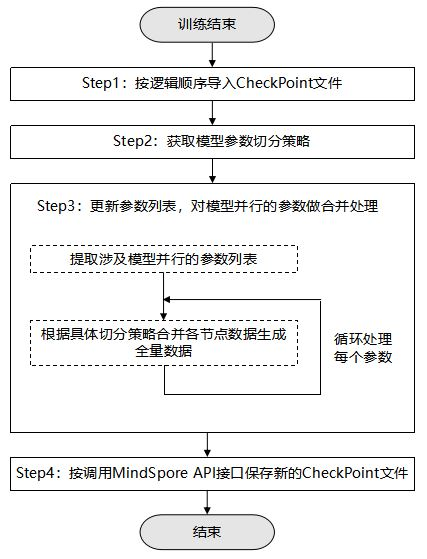

保存和加载模型（HyBrid Parallel模式）
Linux Ascend GPU 模型训练 中级 高级

概述
背景
MindSpore模型并行场景下，每个实例进程只保存有本节点对应的参数数据。对于模型并行的Cell，其在每个节点上的参数数据，都是完整参数数据的一个切片。比如完整参数数据shape为[8, 8]，每个节点上的参数数据为其中的一部分，如shape[2, 8]。
对于自动切分的模型并行场景（Auto Parallel），切分逻辑由MindSpore自动生成，MindSpore的CheckPoint模块可以支持自动合并保存和基于合并保存的加载能力。
对于用户手动设置的并行场景（HyBrid Parallel），切分逻辑由用户自己实现，MindSpore在每个节点上保存相同的模型参数切分策略文件和本节点上的数据，用户需要自己实现CheckPoint文件的合并保存与加载功能。本教程用于指导用户在手动切分场景下，实现CheckPoint的合并保存与加载能力。
使用场景
如果你遇到如下两个场景，需要参考本教程操作，完成CheckPoint的合并保存与加载：
场景1：多卡训练，单卡推理。
以在64卡上训练，并在单卡上推理为例，整体操作流程如下：
执行训练，自动生成CheckPoint文件和模型参数切分策略文件。
用户对保存的CheckPoint文件做合并处理。
根据具体的切分逻辑，对于存在切分的具体模型参数做合并处理，生成新CheckPoint文件。
在单卡环境加载新的CheckPoint文件，之后再根据需要调用export接口导出用于推理的模型。
若CheckPoint的保存环境和加载环境集群的卡数相同，比如在同一训练环境保存加载CheckPoint，或者单卡训练单卡推理，则可以不需要做合并保存和加载。
场景2：训练分为多阶段，每个阶段的集群大小不一样。
以训练阶段一是64卡训练环境，阶段二是56卡训练环境为例，整体操作流程如下：
执行阶段一训练，自动生成CheckPoint文件和模型参数切分策略文件。
用户对保存的CheckPoint文件做合并处理。
根据具体的切分逻辑，对于存在切分的具体模型参数做合并处理，生成新CheckPoint文件。
在阶段二集群上加载合并保存的CheckPoint文件。
在加载过程中，用户需要根据新的训练环境配置，重新切分CheckPoint文件中的参数数据。
执行阶段二训练。
对保存的CheckPoint文件做合并处理
整体流程
首先，执行准备工作，按逻辑顺序将待合并处理的CheckPoint文件导入网络，获取模型全量参数并添加至列表中，再获取模型参数切分策略。对应下图中的Step1和Step2。
其次，更新参数列表，对涉及模型并行的参数做合并处理。对应下图中的Step3。
最后，将更新之后的参数列表，通过MindSpore提供的API保存到文件，生成新的CheckPoint文件。对应下图中的Step4。

准备工作
按逻辑顺序导入CheckPoint文件
定义网络，调用load_checkpoint、load_param_into_net接口，按逻辑顺序将CheckPoint文件导入网络，之后调用parameters_and_names接口获取网络里所有的参数数据。
net = Net()
opt = Momentum(learning_rate=0.01, momentum=0.9, params=net.get_parameters())
net = TrainOneStepCell(net, opt)
param_dicts = []
for i in range(rank_size):
file_name = os.path.join("./node"+str(i), "CKP_1-4_32.ckpt") # checkpoint file name of current node
param_dict = load_checkpoint(file_name)
load_param_into_net(net, param_dict)
param_dict = {}
for _, param in net.parameters_and_names():
param_dict[param.name] = param
param_dicts.append(param_dict)
其中，
rank_size：之前分布式训练的节点数。load_checkpoint：通过该接口加载CheckPoint模型参数文件，返回一个参数字典。load_param_into_net：模型参数数据加载到网络中。
获取模型参数切分策略
调用build_searched_strategy接口，得到模型各个参数的切分策略。
strategy = build_searched_strategy("./strategy_train.cpkt")
其中，
strategy_train.ckpt：保存的模型参数切分策略文件名称，训练网络之前由用户调用set_auto_parallel_context接口自定义strategy_ckpt_save_file参数生成。
对模型并行的参数做合并处理
下面以一个具体的模型参数为例，说明下参数合并处理的具体流程。
参数名称为”weight”，切分逻辑为4卡场景。
针对涉及模型并行的参数，获取所有节点上的参数数据。
sliced_parameters = [] for i in range(4): parameter = param_dicts[i].get("weight") sliced_parameters.append(parameter)
如果要保证参数更新速度不变，需要对优化器中保存的参数，如”moments.weight”，同样做合并处理。
调用
merge_sliced_parameter接口进行参数合并。merged_parameter = merge_sliced_parameter(sliced_parameters, strategy)
如果存在多个模型并行的参数，则需要重复步骤1到步骤2循环逐个处理。
保存数据生成新的CheckPoint文件
将
param_dict转换为list类型数据。param_list = [] for (key, value) in param_dict.items(): each_param = {} each_param["name"] = key if isinstance(value.data, Tensor): param_data = value.data else: param_data = Tensor(value.data) each_param["data"] = param_data param_list.append(each_param)
调用
save_checkpoint接口，将参数数据写入文件，生成新的CheckPoint文件。save_checkpoint(param_list, "./CKP-Integrated_1-4_32.ckpt")
其中，
save_checkpoint： 通过该接口将网络模型参数信息存入文件。CKP-Integrated_1-4_32.ckpt： 新生成的CheckPoint模型参数文件名称。
加载合并保存的CheckPoint文件
整体流程
如果需要将合并保存的CheckPoint加载到多卡训练或推理中，在模型参数真正加载到网络前，需要对于涉及并行的参数数据按照新的逻辑切分。 如下步骤在训练前脚本里实现，步骤1和3同单机CheckPoint加载的逻辑，步骤2为新增，用于涉及并行的模型参数的切分。 对于加载到单卡训练/推理的场景，不涉及数据切分，则步骤2可省略。
步骤1：加载CheckPoint文件
调用load_checkpoint接口，从CheckPoint文件中加载模型参数数据。
param_dict = load_checkpoint("./CKP-Integrated_1-4_32.ckpt")
load_checkpoint：通过该接口加载CheckPoint模型参数文件，返回一个参数字典。CKP-Integrated_1-4_32.ckpt：需要加载的CheckPoint模型参数文件名称。
步骤2：对模型并行参数做切分处理
下面以一个具体的模型参数为例，参数名称为”weight”， 数据值为Tensor [[1, 2, 3, 4], [5, 6, 7, 8]]，切分逻辑为2卡场景，按[2, 1]切分。 切分后数据分布情况如下：
Device0 |
Device1 |
|---|---|
Value [1, 2, 3, 4] |
Value [5, 6, 7, 8] |
对模型参数数据做切分。
如下代码示例，在维度0上，将数据切分为两个切片。
new_param = parameter_dict["weight"] slice_list = np.split(new_param.data.asnumpy(), 2, axis=0) new_param_moments = parameter_dict["moments.weight"] slice_moments_list = np.split(new_param_moments.data.asnumpy(), 2, axis=0)
切分后的数据情况：
slice_list[0] --- [1, 2, 3, 4] 对应device0 slice_list[1] --- [5, 6, 7, 8] 对应device1
与
slice_list类似，slice_moments_list也被切分为两个shape为[1, 4]的Tensor。在每个节点分别加载对应的数据切片。
获取本节点的rank_id，根据rank_id加载数据。
rank = get_rank() tensor_slice = Tensor(slice_list[rank]) tensor_slice_moments = Tensor(slice_moments_list[rank])
get_rank：获取当前设备在集群中的ID。
修改模型参数数据值。
new_param.set_data(tensor_slice, True) new_param_moments.set_data(tensor_slice_moments, True)
set_data：设置模型参数的值，接口参数类型为Tensor 或number。
步骤3：将修改后的参数数据加载到网络中
调用load_param_into_net接口，将模型参数数据加载到网络中。
net = Net()
opt = Momentum(learning_rate=0.01, momentum=0.9, params=parallel_net.get_parameters())
load_param_into_net(net, param_dict)
load_param_into_net(opt, param_dict)
示例
示例场景说明
整体场景：训练分为两个阶段，两阶段的集群规模不一致，模拟FC层MatMul算子并行。
用户流程：
执行阶段1训练：阶段1为4卡训练环境，每卡上MatMul算子weight的shape为[2, 8]，训练过程中自动导出CheckPoint。
执行脚本对CheckPoint文件做合并处理，根据具体的切分逻辑，对于存在切分的具体模型参数做合并处理，生成合并的CheckPoint文件。
执行阶段2训练：阶段2为2卡训练环境，每卡上MatMul算子weight的shape为[4, 8]，从合并后的CheckPoint文件加载初始化模型参数数据，之后执行训练。
具体分布式环境配置和训练部分代码，此处不做详细说明，可以参考分布式并行训练 章节。
本文档附上对CheckPoint文件做合并处理以及分布式训练前加载CheckPoint文件的示例代码，仅作为参考，实际请参考具体情况实现。
示例代码
执行脚本对CheckPoint文件做合并处理。
脚本执行命令：
python ./integrate_checkpoint.py "待合并的CheckPoint文件名称" "合并生成的CheckPoint文件路径&名称" "策略文件路径&名称" "节点数"
integrate_checkpoint.py：
import numpy as np import os import mindspore.nn as nn from mindspore import Tensor, Parameter import mindspore.ops as ops from mindspore import save_checkpoint, load_checkpoint, build_searched_strategy, merge_sliced_parameter class Net(nn.Cell): def __init__(self,weight_init): super(Net, self).__init__() self.weight = Parameter(Tensor(weight_init), layerwise_parallel=True) self.fc = ops.MatMul(transpose_b=True) def construct(self, x): x = self.fc(x, self.weight) return x def integrate_ckpt_file(old_ckpt_file, new_ckpt_file, strategy_file, rank_size): weight = np.ones([2, 8]).astype(np.float32) net = Net(weight) opt = Momentum(learning_rate=0.01, momentum=0.9, params=net.get_parameters()) net = TrainOneStepCell(net, opt) # load CheckPoint into net in rank id order param_dicts = [] for i in range(rank_size): file_name = os.path.join("./node"+str(i), old_ckpt_file) param_dict = load_checkpoint(file_name) load_param_into_net(net, param_dict) param_dict = {} for _, param in net.parameters_and_names(): param_dict[param.name] = param param_dicts.append(param_dict) strategy = build_searched_strategy(strategy_file) param_dict = {} for paramname in ["weight", "moments.weight"]: # get layer wise model parallel parameter sliced_parameters = [] for i in range(rank_size): parameter = param_dicts[i].get(paramname) sliced_parameters.append(parameter) # merge the parallel parameters of the model merged_parameter = merge_sliced_parameter(sliced_parameters, strategy) param_dict[paramname] = merged_parameter # convert param_dict to list type data param_list = [] for (key, value) in param_dict.items(): each_param = {} each_param["name"] = key if isinstance(value.data, Tensor): param_data = value.data else: param_data = Tensor(value.data) each_param["data"] = param_data param_list.append(each_param) # call the API to generate a new CheckPoint file save_checkpoint(param_list, new_ckpt_file) return if __name__ == "__main__": try: old_ckpt_file = sys.argv[1] new_ckpt_file = sys.argv[2] strategy_file = sys.argv[3] rank_size = int(sys.argv[4]) integrate_ckpt_file(old_ckpt_file, new_ckpt_file, strategy_file, rank_size) except: print("Fail to integrate checkpoint file") sys.exit(-1)
执行结果：
脚本执行前，CheckPoint文件中参数值：
device0： name is weight value is [[0.87537426 1.0448935 0.86736983 0.8836905 0.77354026 0.69588304 0.9183654 0.7792076] [0.87224025 0.8726848 0.771446 0.81967723 0.88974726 0.7988162 0.72919345 0.7677011]] name is learning_rate value is [0.01] name is momentum value is [0.9] name is moments.weight value is [[0.2567724 -0.07485991 0.282002 0.2456022 0.454939 0.619168 0.18964815 0.45714882] [0.25946522 0.24344791 0.45677605 0.3611395 0.23378398 0.41439137 0.5312468 0.4696194]] device1： name is weight value is [[0.9210751 0.9050457 0.9827775 0.920396 0.9240526 0.9750359 1.0275179 1.0819869] [0.73605865 0.84631145 0.9746683 0.9386582 0.82902765 0.83565056 0.9702136 1.0514659]] name is learning_rate value is [0.01] name is momentum value is [0.9] name is moments.weight value is [[0.2417504 0.28193963 0.06713893 0.21510397 0.23380603 0.11424308 0.0218009 -0.11969765] [0.45955992 0.22664294 0.01990281 0.0731914 0.27125207 0.27298513 -0.01716102 -0.15327111]] device2： name is weight value is [[1.0108461 0.8689414 0.91719437 0.8805056 0.7994629 0.8999671 0.7585804 1.0287056 ] [0.90653455 0.60146594 0.7206475 0.8306303 0.8364681 0.89625114 0.7354735 0.8447268]] name is learning_rate value is [0.01] name is momentum value is [0.9] name is moments.weight value is [[0.03440702 0.41419312 0.24817684 0.30765256 0.48516113 0.24904746 0.57791173 0.00955463] [0.13458519 0.6690533 0.49259356 0.28319967 0.25951773 0.16777472 0.45696738 0.24933104]] device3： name is weight value is [[0.7147005 0.9168278 0.80178416 0.6258351 0.8413766 0.5909515 0.696347 0.71359116] [0.20506378 0.03691584 0.2454556 0.12978578 0.19065076 0.23904312 0.27509746 0.34614682]] name is learning_rate value is [0.01] name is momentum value is [0.9] name is moments.weight value is [[0.14152306 0.5040985 0.24455397 0.10907605 0.11319532 0.19538902 0.01208619 0.40430856] [-0.7773164 -0.47611716 -0.6041424 -0.6144473 -0.2651842 -0.31909415 -0.4510405 -0.12860501]]
脚本执行后，CheckPoint文件中参数值：
name is weight value is [[1.1138763 1.0962057 1.3516843 1.0812817 1.1579804 1.1078343 1.0906502 1.3207073] [0.916671 1.0781671 1.0368758 0.9680898 1.1735439 1.0628364 0.9960786 1.0135143] [0.8828271 0.7963984 0.90675324 0.9830291 0.89010954 0.897052 0.7890109 0.89784735] [1.0011744 1.0840297 1.0201758 1.0882459 0.94232416 1.0775206 1.0195118 1.0528734] [1.0053468 0.98402303 0.99762845 0.97587246 1.0259694 1.0055295 0.99420834 0.9496847] [1.0851002 1.0295962 1.0999886 1.0958165 0.9765328 1.146529 1.0970603 1.1388365] [0.7147005 0.9168278 0.80178416 0.6258351 0.8413766 0.5909515 0.696347 0.71359116] [0.20506378 0.03691584 0.2454556 0.12978578 0.19065076 0.23904312 0.27509746 0.34614682]] name is learning_rate value is [0.01] name is momentum value is [0.9] name is moments.weight value is [[0.2567724 -0.07485991 0.282002 0.2456022 0.454939 0.619168 0.18964815 0.45714882] [0.25946522 0.24344791 0.45677605 0.3611395 0.23378398 0.41439137 0.5312468 0.4696194 ] [0.2417504 0.28193963 0.06713893 0.21510397 0.23380603 0.11424308 0.0218009 -0.11969765] [0.45955992 0.22664294 0.01990281 0.0731914 0.27125207 0.27298513 -0.01716102 -0.15327111] [0.03440702 0.41419312 0.24817684 0.30765256 0.48516113 0.24904746 0.57791173 0.00955463] [0.13458519 0.6690533 0.49259356 0.28319967 0.25951773 0.16777472 0.45696738 0.24933104] [0.14152306 0.5040985 0.24455397 0.10907605 0.11319532 0.19538902 0.01208619 0.40430856] [-0.7773164 -0.47611716 -0.6041424 -0.6144473 -0.2651842 -0.31909415 -0.4510405 -0.12860501]]
执行阶段2训练，训练前加载CheckPoint文件。其中训练代码部分，需要根据实际情况补充。
import numpy as np import os import mindspore.nn as nn from mindspore import context from mindspore.communication.management import init from mindspore import Tensor, Parameter import mindspore.ops as ops from mindspore import load_checkpoint, load_param_into_net from mindspore.communication.management import init devid = int(os.getenv('DEVICE_ID')) context.set_context(mode=context.GRAPH_MODE,device_target='Ascend',save_graphs=True, device_id=devid) init() class Net(nn.Cell): def __init__(self,weight_init): super(Net, self).__init__() self.weight = Parameter(Tensor(weight_init), layerwise_parallel=True) self.fc = ops.MatMul(transpose_b=True) def construct(self, x): x = self.fc(x, self.weight) return x def train_mindspore_impl_fc(input, label, ckpt_file): param_dict = load_checkpoint(ckpt_file) for paramname in ["weight", "moments.weight"]: # get layer wise model parallel parameter new_param = parameter_dict[paramname] # split the model parameter data slice_list = np.split(new_param.data.asnumpy(), 2, axis=0) # Load the corresponding data slice rank = get_rank() tensor_slice = Tensor(slice_list[rank]) # modify model parameter data values new_param.set_data(tensor_slice, True) # load the modified parameter data into the network weight = np.ones([4, 8]).astype(np.float32) net = Net(weight) load_param_into_net(net, param_dict) opt = Momentum(learning_rate=0.01, momentum=0.9, params=parallel_net.get_parameters()) load_param_into_net(opt, param_dict) # train code ... if __name__ == "__main__": input = np.random.random((4, 8)).astype(np.float32) print("mean = ", np.mean(input,axis=1, keepdims=True)) label = np.random.random((4, 4)).astype(np.float32) ckpt_file = sys.argv[1] train_mindspore_impl_fc(input, label, ckpt_file)
其中，
mode=context.GRAPH_MODE：使用分布式训练需要指定运行模式为图模式（PyNative模式不支持并行）。device_id：卡物理序号，即卡所在机器中的实际序号。init：完成分布式训练初始化操作。
加载后的参数值：
device0： name is weight value is [[0.87537426 1.0448935 0.86736983 0.8836905 0.77354026 0.69588304 0.9183654 0.7792076] [0.87224025 0.8726848 0.771446 0.81967723 0.88974726 0.7988162 0.72919345 0.7677011] [0.8828271 0.7963984 0.90675324 0.9830291 0.89010954 0.897052 0.7890109 0.89784735] [1.0011744 1.0840297 1.0201758 1.0882459 0.94232416 1.0775206 1.0195118 1.0528734]] name is learning_rate value is [0.01] name is momentum value is [0.9] name is moments.weight value is [[0.2567724 -0.07485991 0.282002 0.2456022 0.454939 0.619168 0.18964815 0.45714882] [0.25946522 0.24344791 0.45677605 0.3611395 0.23378398 0.41439137 0.5312468 0.4696194] [0.2417504 0.28193963 0.06713893 0.21510397 0.23380603 0.11424308 0.0218009 -0.11969765] [0.45955992 0.22664294 0.01990281 0.0731914 0.27125207 0.27298513 -0.01716102 -0.15327111]] device1： name is weight value is [[1.0053468 0.98402303 0.99762845 0.97587246 1.0259694 1.0055295 0.99420834 0.9496847] [1.0851002 1.0295962 1.0999886 1.0958165 0.9765328 1.146529 1.0970603 1.1388365] [0.7147005 0.9168278 0.80178416 0.6258351 0.8413766 0.5909515 0.696347 0.71359116] [0.20506378 0.03691584 0.2454556 0.12978578 0.19065076 0.23904312 0.27509746 0.34614682]] name is learning_rate value is [0.01] name is momentum value is [0.9] name is moments.weight value is [[0.03440702 0.41419312 0.24817684 0.30765256 0.48516113 0.24904746 0.57791173 0.00955463] [0.13458519 0.6690533 0.49259356 0.28319967 0.25951773 0.16777472 0.45696738 0.24933104] [0.14152306 0.5040985 0.24455397 0.10907605 0.11319532 0.19538902 0.01208619 0.40430856] [-0.7773164 -0.47611716 -0.6041424 -0.6144473 -0.2651842 -0.31909415 -0.4510405 -0.12860501]]